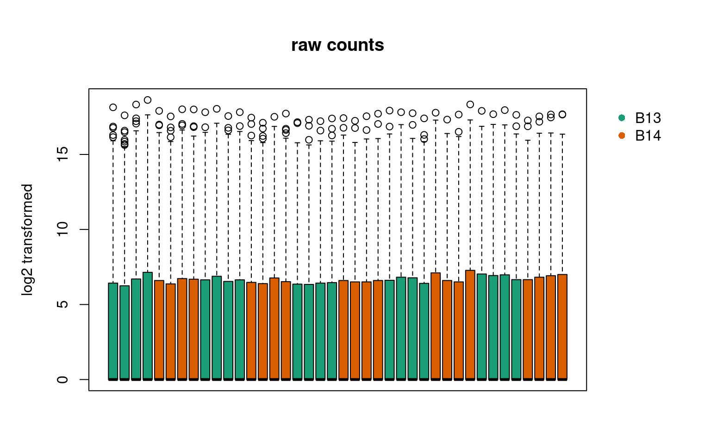
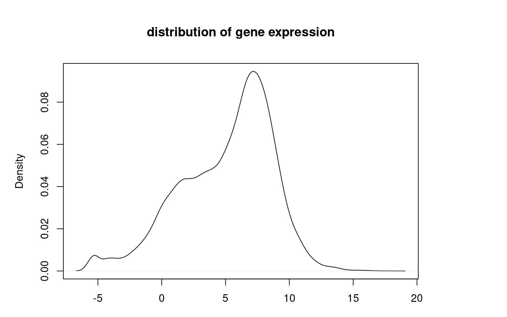
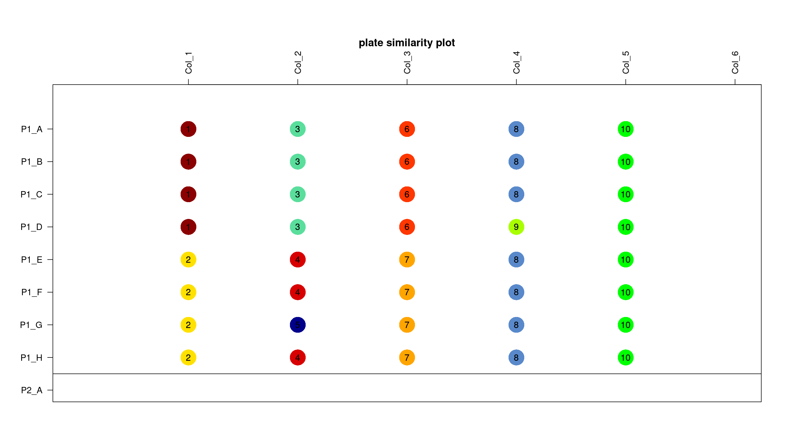
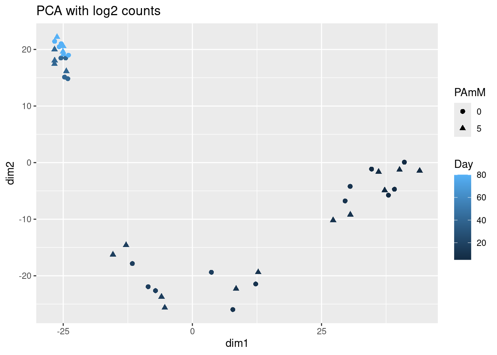

Bulk_Data
A Chiocchetti
2024-01-09
Last updated: 2024-01-12
Checks: 7 0
Knit directory: files/
This reproducible R Markdown analysis was created with workflowr (version 1.7.1). The Checks tab describes the reproducibility checks that were applied when the results were created. The Past versions tab lists the development history.
Great! Since the R Markdown file has been committed to the Git repository, you know the exact version of the code that produced these results.
Great job! The global environment was empty. Objects defined in the global environment can affect the analysis in your R Markdown file in unknown ways. For reproduciblity it’s best to always run the code in an empty environment.
The command set.seed(20240103) was run prior to running
the code in the R Markdown file. Setting a seed ensures that any results
that rely on randomness, e.g. subsampling or permutations, are
reproducible.
Great job! Recording the operating system, R version, and package versions is critical for reproducibility.
Nice! There were no cached chunks for this analysis, so you can be confident that you successfully produced the results during this run.
Great job! Using relative paths to the files within your workflowr project makes it easier to run your code on other machines.
Great! You are using Git for version control. Tracking code development and connecting the code version to the results is critical for reproducibility.
The results in this page were generated with repository version f7ee227. See the Past versions tab to see a history of the changes made to the R Markdown and HTML files.
Note that you need to be careful to ensure that all relevant files for
the analysis have been committed to Git prior to generating the results
(you can use wflow_publish or
wflow_git_commit). workflowr only checks the R Markdown
file, but you know if there are other scripts or data files that it
depends on. Below is the status of the Git repository when the results
were generated:
Ignored files:
Ignored: .Rhistory
Ignored: .Rprofile
Ignored: .Rproj.user/
Ignored: output/05_Bulk_Preprocessing/
Ignored: output/07_Bulk_Deconv/
Untracked files:
Untracked: .bashrc
Untracked: .nuvolos/
Untracked: data/Bulk_dds_matrix.rds
Untracked: data/Bulkdata_Countmatrix.rds
Untracked: data/HumDev/
Untracked: data/Kanton/
Untracked: data/KantonGeneList/
Untracked: data/Knoblich/
Untracked: data/QC_data.filt.rds
Untracked: data/QC_dataClustered.filt.rds
Untracked: data/QC_dataClustered.filtTyped.rds
Untracked: data/QC_dataClustered.filtTypedTraj.rds
Untracked: data/QC_dataFinal.rds
Untracked: data/Yoon/
Untracked: data/alldata.rds
Unstaged changes:
Modified: .gitignore
Modified: output/02_Clustering/Cluster_markers.xls
Modified: output/02_Clustering/Clusters_GO_termsCluster.xlsx
Modified: output/04_Biostat/Biostat_DEG_allcells.xlsx
Modified: output/04_Biostat/Biostat_DEG_cluster_0cells.xlsx
Modified: output/04_Biostat/Biostat_DEG_cluster_10cells.xlsx
Modified: output/04_Biostat/Biostat_DEG_cluster_11cells.xlsx
Modified: output/04_Biostat/Biostat_DEG_cluster_12cells.xlsx
Modified: output/04_Biostat/Biostat_DEG_cluster_13cells.xlsx
Modified: output/04_Biostat/Biostat_DEG_cluster_1cells.xlsx
Modified: output/04_Biostat/Biostat_DEG_cluster_2cells.xlsx
Modified: output/04_Biostat/Biostat_DEG_cluster_3cells.xlsx
Modified: output/04_Biostat/Biostat_DEG_cluster_4cells.xlsx
Modified: output/04_Biostat/Biostat_DEG_cluster_5cells.xlsx
Modified: output/04_Biostat/Biostat_DEG_cluster_6cells.xlsx
Modified: output/04_Biostat/Biostat_DEG_cluster_7cells.xlsx
Modified: output/04_Biostat/Biostat_DEG_cluster_8cells.xlsx
Modified: output/04_Biostat/Biostat_DEG_cluster_9cells.xlsx
Modified: output/04_Biostat/Biostat_GO_termDEG_all.xlsx
Modified: output/04_Biostat/Biostat_GO_termDEG_cluster_0.xlsx
Modified: output/04_Biostat/Biostat_GO_termDEG_cluster_1.xlsx
Modified: output/04_Biostat/Biostat_GO_termDEG_cluster_10.xlsx
Modified: output/04_Biostat/Biostat_GO_termDEG_cluster_11.xlsx
Modified: output/04_Biostat/Biostat_GO_termDEG_cluster_12.xlsx
Modified: output/04_Biostat/Biostat_GO_termDEG_cluster_13.xlsx
Modified: output/04_Biostat/Biostat_GO_termDEG_cluster_2.xlsx
Modified: output/04_Biostat/Biostat_GO_termDEG_cluster_3.xlsx
Modified: output/04_Biostat/Biostat_GO_termDEG_cluster_4.xlsx
Modified: output/04_Biostat/Biostat_GO_termDEG_cluster_5.xlsx
Modified: output/04_Biostat/Biostat_GO_termDEG_cluster_6.xlsx
Modified: output/04_Biostat/Biostat_GO_termDEG_cluster_7.xlsx
Modified: output/04_Biostat/Biostat_GO_termDEG_cluster_8.xlsx
Modified: output/04_Biostat/Biostat_GO_termDEG_cluster_9.xlsx
Modified: output/04_Biostat/Biostat_HumdevCTFreq.xslsx
Modified: output/04_Biostat/Biostat_clusterFreq.xslsx
Modified: workflowHelper.R
Note that any generated files, e.g. HTML, png, CSS, etc., are not included in this status report because it is ok for generated content to have uncommitted changes.
These are the previous versions of the repository in which changes were
made to the R Markdown (analysis/05_Preprocessing_Bulk.Rmd)
and HTML (docs/05_Preprocessing_Bulk.html) files. If you’ve
configured a remote Git repository (see ?wflow_git_remote),
click on the hyperlinks in the table below to view the files as they
were in that past version.
| File | Version | Author | Date | Message |
|---|---|---|---|---|
| html | 9044a86 | Andreas Chiocchetti | 2024-01-11 | Build site. |
| html | f206c28 | Andreas Chiocchetti | 2024-01-11 | wflow_publish(c("./analysis/.Rmd", "./code/", "./docs/*")) |
| Rmd | bca1a73 | Andreas Chiocchetti | 2024-01-09 | intermediate stage bulk seq |
library(knitr)
library(RCurl)
library(DESeq2)Loading required package: S4VectorsLoading required package: stats4Loading required package: BiocGenerics
Attaching package: 'BiocGenerics'The following objects are masked from 'package:stats':
IQR, mad, sd, var, xtabsThe following objects are masked from 'package:base':
anyDuplicated, aperm, append, as.data.frame, basename, cbind,
colnames, dirname, do.call, duplicated, eval, evalq, Filter, Find,
get, grep, grepl, intersect, is.unsorted, lapply, Map, mapply,
match, mget, order, paste, pmax, pmax.int, pmin, pmin.int,
Position, rank, rbind, Reduce, rownames, sapply, setdiff, sort,
table, tapply, union, unique, unsplit, which.max, which.min
Attaching package: 'S4Vectors'The following object is masked from 'package:utils':
findMatchesThe following objects are masked from 'package:base':
expand.grid, I, unnameLoading required package: IRangesLoading required package: GenomicRangesLoading required package: GenomeInfoDbLoading required package: SummarizedExperimentLoading required package: MatrixGenericsLoading required package: matrixStats
Attaching package: 'MatrixGenerics'The following objects are masked from 'package:matrixStats':
colAlls, colAnyNAs, colAnys, colAvgsPerRowSet, colCollapse,
colCounts, colCummaxs, colCummins, colCumprods, colCumsums,
colDiffs, colIQRDiffs, colIQRs, colLogSumExps, colMadDiffs,
colMads, colMaxs, colMeans2, colMedians, colMins, colOrderStats,
colProds, colQuantiles, colRanges, colRanks, colSdDiffs, colSds,
colSums2, colTabulates, colVarDiffs, colVars, colWeightedMads,
colWeightedMeans, colWeightedMedians, colWeightedSds,
colWeightedVars, rowAlls, rowAnyNAs, rowAnys, rowAvgsPerColSet,
rowCollapse, rowCounts, rowCummaxs, rowCummins, rowCumprods,
rowCumsums, rowDiffs, rowIQRDiffs, rowIQRs, rowLogSumExps,
rowMadDiffs, rowMads, rowMaxs, rowMeans2, rowMedians, rowMins,
rowOrderStats, rowProds, rowQuantiles, rowRanges, rowRanks,
rowSdDiffs, rowSds, rowSums2, rowTabulates, rowVarDiffs, rowVars,
rowWeightedMads, rowWeightedMeans, rowWeightedMedians,
rowWeightedSds, rowWeightedVarsLoading required package: BiobaseWelcome to Bioconductor
Vignettes contain introductory material; view with
'browseVignettes()'. To cite Bioconductor, see
'citation("Biobase")', and for packages 'citation("pkgname")'.
Attaching package: 'Biobase'The following object is masked from 'package:MatrixGenerics':
rowMediansThe following objects are masked from 'package:matrixStats':
anyMissing, rowMedianslibrary(RColorBrewer)
library(glmpca)
library(ggplot2)
library(tidyverse)── Attaching core tidyverse packages ──────────────────────── tidyverse 2.0.0 ──
✔ dplyr 1.1.4 ✔ readr 2.1.4
✔ forcats 1.0.0 ✔ stringr 1.5.1
✔ lubridate 1.9.3 ✔ tibble 3.2.1
✔ purrr 1.0.2 ✔ tidyr 1.3.0── Conflicts ────────────────────────────────────────── tidyverse_conflicts() ──
✖ lubridate::%within%() masks IRanges::%within%()
✖ dplyr::collapse() masks IRanges::collapse()
✖ dplyr::combine() masks Biobase::combine(), BiocGenerics::combine()
✖ tidyr::complete() masks RCurl::complete()
✖ dplyr::count() masks matrixStats::count()
✖ dplyr::desc() masks IRanges::desc()
✖ tidyr::expand() masks S4Vectors::expand()
✖ dplyr::filter() masks stats::filter()
✖ dplyr::first() masks S4Vectors::first()
✖ dplyr::lag() masks stats::lag()
✖ ggplot2::Position() masks BiocGenerics::Position(), base::Position()
✖ purrr::reduce() masks GenomicRanges::reduce(), IRanges::reduce()
✖ dplyr::rename() masks S4Vectors::rename()
✖ lubridate::second() masks S4Vectors::second()
✖ lubridate::second<-() masks S4Vectors::second<-()
✖ dplyr::slice() masks IRanges::slice()
ℹ Use the conflicted package (<http://conflicted.r-lib.org/>) to force all conflicts to become errorslibrary(pheatmap)
library(dendextend)
---------------------
Welcome to dendextend version 1.17.1
Type citation('dendextend') for how to cite the package.
Type browseVignettes(package = 'dendextend') for the package vignette.
The github page is: https://github.com/talgalili/dendextend/
Suggestions and bug-reports can be submitted at: https://github.com/talgalili/dendextend/issues
You may ask questions at stackoverflow, use the r and dendextend tags:
https://stackoverflow.com/questions/tagged/dendextend
To suppress this message use: suppressPackageStartupMessages(library(dendextend))
---------------------
Attaching package: 'dendextend'
The following object is masked from 'package:stats':
cutreelibrary(gprofiler2)options(stringsAsFactors = F)
set.seed(157434538)
Dark8 = RColorBrewer::brewer.pal(8, "Dark2")
source(paste0("code/custom_functions.R")) #also defines colorsLoading required package: kableExtra
Attaching package: 'kableExtra'The following object is masked from 'package:dplyr':
group_rowsLoading required package: compareGroupsoutput= paste0("output/05_Bulk_Preprocessing")
dir.create(output, showWarnings = FALSE)
filetarget <- "./data/Bulkdata_Countmatrix.rds"
Countdata <- readRDS(filetarget)
Ntot= nrow(Countdata)
#merge non unique annotations
if(length(unique(rownames(Countdata))) != Ntot){
Countdata = Countdata %>% group_by(row.names(Countdata)) %>% summarise_each(sum)
Ntot= nrow(Countdata)
}
hgnc=gconvert(query=as.numeric(rownames(Countdata)),
organism = "hsapiens",
numeric_ns = "ENTREZGENE_ACC",
target = "HGNC")
Ids = hgnc %>% dplyr::select(name, input, description) %>% group_by(input) %>%
summarise(name=paste(name, sep="; ", collapse = ";"), description = dplyr::first(description))
rowdescription = data.frame(entrez_gene = Ids$input,
hgnc=Ids$name,
description=Ids$description)
rowdescription = rowdescription[match(row.names(Countdata), rowdescription$entrez_gene),]
rownames(rowdescription)=row.names(Countdata)
# load and parse sample information
SampleInfo <- data.frame(Fullname = make.names(colnames(Countdata)))
strsplit(SampleInfo$Fullname, split = "\\.") %>%
lapply(function(x) x[1]) %>% unlist -> SampleInfo$Position
SampleInfo$Row = substr(SampleInfo$Position, 1,1)
SampleInfo$Col = as.numeric(substr(SampleInfo$Position, 2,3))
strsplit(SampleInfo$Fullname, split = "\\.") %>%
lapply(function(x) x[3]) %>% unlist %>% as.factor()-> SampleInfo$Replicate
strsplit(SampleInfo$Fullname, split = "\\.") %>%
lapply(function(x) x[2]) %>% unlist -> infos
strsplit(infos, split = "_") %>%
lapply(function(x) x[1])%>% unlist %>% as.factor() -> SampleInfo$CellLine
strsplit(infos, split = "_") %>%
lapply(function(x) x[2])%>% unlist %>% as.factor() -> SampleInfo$Batch
strsplit(infos, split = "_") %>%
lapply(function(x) as.numeric(gsub("d","", x[3])))%>% unlist -> SampleInfo$Day
strsplit(infos, split = "_") %>%
lapply(function(x) factor(gsub("mM","",x[4]), levels=c(0,5)))%>% unlist -> SampleInfo$PAmM
rownames(SampleInfo) <- SampleInfo$Fullname
colnames(Countdata) <- make.names(colnames(Countdata))
# align datasets
checkfiles = all(rownames(SampleInfo) %in% colnames(Countdata))
IDs=intersect(rownames(SampleInfo), colnames(Countdata))
Countdata = Countdata[,IDs]
SampleInfo = SampleInfo[IDs, ]
SampleInfo$reads_per_sample = colSums(Countdata)display_tab(head(Countdata))| A01.H9_B13_d5_0mM_PA.1 | B01.H9_B13_d5_0mM_PA.2 | C01.H9_B13_d5_5mM_PA.1 | D01.H9_B13_d5_5mM_PA.2 | E01.H9_B14_d5_0mM_PA.1 | F01.H9_B14_d5_0mM_PA.2 | G01.H9_B14_d5_5mM_PA.1 | H01.H9_B14_d5_5mM_PA.2 | A02.H9_B13_d10_0mM_PA.1 | B02.H9_B13_d10_0mM_PA.2 | C02.H9_B13_d10_5mM_PA.1 | D02.H9_B13_d10_5mM_PA.2 | E02.H9_B14_d10_0mM_PA.1 | F02.H9_B14_d10_0mM_PA.2 | G02.H9_B14_d10_5mM_PA.1 | H02.H9_B14_d10_5mM_PA.2 | A03.H9_B13_d17_0mM_PA.1 | B03.H9_B13_d17_0mM_PA.2 | C03.H9_B13_d17_5mM_PA.1 | D03.H9_B13_d17_5mM_PA.2 | E03.H9_B14_d17_0mM_PA.1 | F03.H9_B14_d17_0mM_PA.2 | G03.H9_B14_d17_5mM_PA.1 | H03.H9_B14_d17_5mM_PA.2 | A04.H9_B13_d40_0mM_PA.1 | B04.H9_B13_d40_0mM_PA.2 | C04.H9_B13_d40_5mM_PA.1 | D04.H9_B13_d40_5mM_PA.2 | E04.H9_B14_d40_0mM_PA.1 | F04.H9_B14_d40_0mM_PA.2 | G04.H9_B14_d40_5mM_PA.1 | H04.H9_B14_d40_5mM_PA.2 | A05.H9_B13_d80_0mM_PA.1 | B05.H9_B13_d80_0mM_PA.2 | C05.H9_B13_d80_5mM_PA.1 | D05.H9_B13_d80_5mM_PA.2 | E05.H9_B14_d80_0mM_PA.1 | F05.H9_B14_d80_0mM_PA.2 | G05.H9_B14_d80_5mM_PA.1 | H05.H9_B14_d80_5mM_PA.2 | |
|---|---|---|---|---|---|---|---|---|---|---|---|---|---|---|---|---|---|---|---|---|---|---|---|---|---|---|---|---|---|---|---|---|---|---|---|---|---|---|---|---|
| 100287102 | 0 | 0 | 0 | 0 | 0 | 0 | 0 | 0 | 0 | 0 | 0 | 0 | 0 | 0 | 0 | 0 | 0 | 0 | 0 | 0 | 0 | 0 | 0 | 0 | 0 | 0 | 0 | 0 | 0 | 0 | 0 | 0 | 0 | 0 | 0 | 0 | 0 | 0 | 0 | 0 |
| 653635 | 0 | 0 | 0 | 0 | 0 | 0 | 0 | 0 | 0 | 0 | 0 | 0 | 0 | 0 | 0 | 2 | 0 | 0 | 1 | 0 | 0 | 0 | 0 | 0 | 0 | 0 | 0 | 0 | 0 | 0 | 1 | 0 | 0 | 0 | 1 | 0 | 0 | 0 | 1 | 0 |
| 102466751 | 0 | 0 | 0 | 0 | 0 | 0 | 0 | 0 | 0 | 0 | 0 | 0 | 0 | 0 | 0 | 0 | 0 | 0 | 0 | 0 | 0 | 0 | 0 | 0 | 0 | 0 | 0 | 0 | 0 | 0 | 0 | 0 | 0 | 0 | 0 | 0 | 0 | 0 | 0 | 0 |
| 100302278 | 0 | 0 | 0 | 0 | 0 | 0 | 0 | 0 | 0 | 0 | 0 | 0 | 0 | 0 | 0 | 0 | 0 | 0 | 0 | 0 | 0 | 0 | 0 | 0 | 0 | 0 | 0 | 0 | 0 | 0 | 0 | 0 | 0 | 0 | 0 | 0 | 0 | 0 | 0 | 0 |
| 645520 | 0 | 0 | 0 | 0 | 0 | 0 | 0 | 0 | 0 | 0 | 0 | 0 | 0 | 0 | 0 | 0 | 0 | 0 | 0 | 0 | 0 | 0 | 0 | 0 | 0 | 0 | 0 | 0 | 0 | 0 | 0 | 0 | 0 | 0 | 0 | 0 | 0 | 0 | 0 | 0 |
| 79501 | 0 | 0 | 0 | 0 | 0 | 0 | 0 | 0 | 0 | 0 | 0 | 0 | 0 | 0 | 0 | 0 | 0 | 0 | 0 | 0 | 0 | 0 | 0 | 0 | 0 | 0 | 0 | 0 | 0 | 0 | 0 | 0 | 0 | 0 | 0 | 0 | 0 | 0 | 0 | 0 |
display_tab(SampleInfo)| Fullname | Position | Row | Col | Replicate | CellLine | Batch | Day | PAmM | reads_per_sample | |
|---|---|---|---|---|---|---|---|---|---|---|
| A01.H9_B13_d5_0mM_PA.1 | A01.H9_B13_d5_0mM_PA.1 | A01 | A | 1 | 1 | H9 | B13 | 5 | 0 | 28448 |
| B01.H9_B13_d5_0mM_PA.2 | B01.H9_B13_d5_0mM_PA.2 | B01 | B | 1 | 2 | H9 | B13 | 5 | 0 | 27777 |
| C01.H9_B13_d5_5mM_PA.1 | C01.H9_B13_d5_5mM_PA.1 | C01 | C | 1 | 1 | H9 | B13 | 5 | 5 | 27741 |
| D01.H9_B13_d5_5mM_PA.2 | D01.H9_B13_d5_5mM_PA.2 | D01 | D | 1 | 2 | H9 | B13 | 5 | 5 | 24783 |
| E01.H9_B14_d5_0mM_PA.1 | E01.H9_B14_d5_0mM_PA.1 | E01 | E | 1 | 1 | H9 | B14 | 5 | 0 | 25660 |
| F01.H9_B14_d5_0mM_PA.2 | F01.H9_B14_d5_0mM_PA.2 | F01 | F | 1 | 2 | H9 | B14 | 5 | 0 | 25605 |
| G01.H9_B14_d5_5mM_PA.1 | G01.H9_B14_d5_5mM_PA.1 | G01 | G | 1 | 1 | H9 | B14 | 5 | 5 | 25134 |
| H01.H9_B14_d5_5mM_PA.2 | H01.H9_B14_d5_5mM_PA.2 | H01 | H | 1 | 2 | H9 | B14 | 5 | 5 | 25016 |
| A02.H9_B13_d10_0mM_PA.1 | A02.H9_B13_d10_0mM_PA.1 | A02 | A | 2 | 1 | H9 | B13 | 10 | 0 | 25830 |
| B02.H9_B13_d10_0mM_PA.2 | B02.H9_B13_d10_0mM_PA.2 | B02 | B | 2 | 2 | H9 | B13 | 10 | 0 | 25399 |
| C02.H9_B13_d10_5mM_PA.1 | C02.H9_B13_d10_5mM_PA.1 | C02 | C | 2 | 1 | H9 | B13 | 10 | 5 | 25773 |
| D02.H9_B13_d10_5mM_PA.2 | D02.H9_B13_d10_5mM_PA.2 | D02 | D | 2 | 2 | H9 | B13 | 10 | 5 | 24920 |
| E02.H9_B14_d10_0mM_PA.1 | E02.H9_B14_d10_0mM_PA.1 | E02 | E | 2 | 1 | H9 | B14 | 10 | 0 | 23846 |
| F02.H9_B14_d10_0mM_PA.2 | F02.H9_B14_d10_0mM_PA.2 | F02 | F | 2 | 2 | H9 | B14 | 10 | 0 | 24990 |
| G02.H9_B14_d10_5mM_PA.1 | G02.H9_B14_d10_5mM_PA.1 | G02 | G | 2 | 1 | H9 | B14 | 10 | 5 | 25055 |
| H02.H9_B14_d10_5mM_PA.2 | H02.H9_B14_d10_5mM_PA.2 | H02 | H | 2 | 2 | H9 | B14 | 10 | 5 | 25271 |
| A03.H9_B13_d17_0mM_PA.1 | A03.H9_B13_d17_0mM_PA.1 | A03 | A | 3 | 1 | H9 | B13 | 17 | 0 | 20256 |
| B03.H9_B13_d17_0mM_PA.2 | B03.H9_B13_d17_0mM_PA.2 | B03 | B | 3 | 2 | H9 | B13 | 17 | 0 | 21335 |
| C03.H9_B13_d17_5mM_PA.1 | C03.H9_B13_d17_5mM_PA.1 | C03 | C | 3 | 1 | H9 | B13 | 17 | 5 | 22987 |
| D03.H9_B13_d17_5mM_PA.2 | D03.H9_B13_d17_5mM_PA.2 | D03 | D | 3 | 2 | H9 | B13 | 17 | 5 | 22413 |
| E03.H9_B14_d17_0mM_PA.1 | E03.H9_B14_d17_0mM_PA.1 | E03 | E | 3 | 1 | H9 | B14 | 17 | 0 | 20186 |
| F03.H9_B14_d17_0mM_PA.2 | F03.H9_B14_d17_0mM_PA.2 | F03 | F | 3 | 2 | H9 | B14 | 17 | 0 | 18237 |
| G03.H9_B14_d17_5mM_PA.1 | G03.H9_B14_d17_5mM_PA.1 | G03 | G | 3 | 1 | H9 | B14 | 17 | 5 | 19155 |
| H03.H9_B14_d17_5mM_PA.2 | H03.H9_B14_d17_5mM_PA.2 | H03 | H | 3 | 2 | H9 | B14 | 17 | 5 | 18808 |
| A04.H9_B13_d40_0mM_PA.1 | A04.H9_B13_d40_0mM_PA.1 | A04 | A | 4 | 1 | H9 | B13 | 40 | 0 | 25961 |
| B04.H9_B13_d40_0mM_PA.2 | B04.H9_B13_d40_0mM_PA.2 | B04 | B | 4 | 2 | H9 | B13 | 40 | 0 | 24617 |
| C04.H9_B13_d40_5mM_PA.1 | C04.H9_B13_d40_5mM_PA.1 | C04 | C | 4 | 1 | H9 | B13 | 40 | 5 | 24663 |
| D04.H9_B13_d40_5mM_PA.2 | D04.H9_B13_d40_5mM_PA.2 | D04 | D | 4 | 2 | H9 | B13 | 40 | 5 | 23748 |
| E04.H9_B14_d40_0mM_PA.1 | E04.H9_B14_d40_0mM_PA.1 | E04 | E | 4 | 1 | H9 | B14 | 40 | 0 | 22779 |
| F04.H9_B14_d40_0mM_PA.2 | F04.H9_B14_d40_0mM_PA.2 | F04 | F | 4 | 2 | H9 | B14 | 40 | 0 | 24614 |
| G04.H9_B14_d40_5mM_PA.1 | G04.H9_B14_d40_5mM_PA.1 | G04 | G | 4 | 1 | H9 | B14 | 40 | 5 | 24834 |
| H04.H9_B14_d40_5mM_PA.2 | H04.H9_B14_d40_5mM_PA.2 | H04 | H | 4 | 2 | H9 | B14 | 40 | 5 | 25446 |
| A05.H9_B13_d80_0mM_PA.1 | A05.H9_B13_d80_0mM_PA.1 | A05 | A | 5 | 1 | H9 | B13 | 80 | 0 | 25687 |
| B05.H9_B13_d80_0mM_PA.2 | B05.H9_B13_d80_0mM_PA.2 | B05 | B | 5 | 2 | H9 | B13 | 80 | 0 | 23246 |
| C05.H9_B13_d80_5mM_PA.1 | C05.H9_B13_d80_5mM_PA.1 | C05 | C | 5 | 1 | H9 | B13 | 80 | 5 | 23903 |
| D05.H9_B13_d80_5mM_PA.2 | D05.H9_B13_d80_5mM_PA.2 | D05 | D | 5 | 2 | H9 | B13 | 80 | 5 | 23983 |
| E05.H9_B14_d80_0mM_PA.1 | E05.H9_B14_d80_0mM_PA.1 | E05 | E | 5 | 1 | H9 | B14 | 80 | 0 | 21159 |
| F05.H9_B14_d80_0mM_PA.2 | F05.H9_B14_d80_0mM_PA.2 | F05 | F | 5 | 2 | H9 | B14 | 80 | 0 | 23648 |
| G05.H9_B14_d80_5mM_PA.1 | G05.H9_B14_d80_5mM_PA.1 | G05 | G | 5 | 1 | H9 | B14 | 80 | 5 | 21528 |
| H05.H9_B14_d80_5mM_PA.2 | H05.H9_B14_d80_5mM_PA.2 | H05 | H | 5 | 2 | H9 | B14 | 80 | 5 | 22292 |
boxplot_counts = function(plotsubset,maintitle,colorcode){
vals=log2(plotsubset+1)
a =boxplot(vals, main = maintitle,
col = Dark8[as.factor(SampleInfo[,colorcode])], names=NA,
ylab = "log2 transformed", xlab="samples", xaxt="n")
legend(ncol(vals)*1.1, max(vals), legend = levels(SampleInfo[,colorcode]),
bg="white",xpd=T,box.col = "white",
pch = 16, col = Dark8[1:length(unique(SampleInfo[,colorcode]))])
}
barplot_counts = function(DF, maintitle, colorcode, coltoplot="reads_per_sample") {
vals=log2(DF[,coltoplot])
barplot(vals, main = maintitle,
col = Dark8[as.factor(DF[,colorcode])], names=NA, xaxt="n",
ylab = "log2 transformed", xlab="samples")
legend(length(vals)*1.25, max(vals), legend = levels(DF[,colorcode]), pch = 16,
bg ="white",xpd=T, box.col="white",
col = Dark8[1:length(unique(DF[,colorcode]))])
}
par(mar=c(3,5,5,7))
boxplot_counts(plotsubset = Countdata, maintitle = "raw counts", colorcode = "Batch")
| Version | Author | Date |
|---|---|---|
| f206c28 | Andreas Chiocchetti | 2024-01-11 |
barplot_counts(SampleInfo, "total reads", "Batch")
| Version | Author | Date |
|---|---|---|
| f206c28 | Andreas Chiocchetti | 2024-01-11 |
plot(density(log2(rowMeans(Countdata))), main="distribution of gene expression",
xlab="mean log2(counts +1)")
| Version | Author | Date |
|---|---|---|
| f206c28 | Andreas Chiocchetti | 2024-01-11 |
# remove genes wich were not detected in at least 25% of the samples
keeperidx = rowSums(Countdata>1)>nrow(SampleInfo)/4
Countdata_cl = Countdata[keeperidx, ]
rowdescription = rowdescription[row.names(Countdata_cl),]
fullmodel = as.formula("~Day+PAmM")
ddsMat <- DESeqDataSetFromMatrix(countData = Countdata_cl,
colData = SampleInfo,
rowData = rowdescription,
design = fullmodel) the design formula contains one or more numeric variables with integer values,
specifying a model with increasing fold change for higher values.
did you mean for this to be a factor? if so, first convert
this variable to a factor using the factor() function the design formula contains one or more numeric variables that have mean or
standard deviation larger than 5 (an arbitrary threshold to trigger this message).
Including numeric variables with large mean can induce collinearity with the intercept.
Users should center and scale numeric variables in the design to improve GLM convergence.ddsMat = estimateSizeFactors(ddsMat)
ddsMat = estimateDispersions(ddsMat)gene-wise dispersion estimatesmean-dispersion relationshipfinal dispersion estimatesreads = as.data.frame(counts(ddsMat, normalized=T))
SDs = apply(reads, 1, sd)
keepvar = SDs>0
ddsMat <- ddsMat[keepvar,]
Nfilt = length(ddsMat)
reads = as.data.frame(counts(ddsMat, normalized=T))
SampleInfo$reads_per_sample_cl= colSums(reads)
par(mar=c(3,5,5,7))
boxplot_counts(plotsubset = Countdata_cl, maintitle = "raw counts QCed", colorcode = "Batch")
| Version | Author | Date |
|---|---|---|
| f206c28 | Andreas Chiocchetti | 2024-01-11 |
barplot_counts(SampleInfo, "total reads QCed", "Batch", coltoplot ="reads_per_sample_cl")
| Version | Author | Date |
|---|---|---|
| f206c28 | Andreas Chiocchetti | 2024-01-11 |
plot(density(log2(rowMeans(Countdata_cl))), main="distribution of gene expression",
xlab="mean log2(counts +1) QCed")
| Version | Author | Date |
|---|---|---|
| f206c28 | Andreas Chiocchetti | 2024-01-11 |
before cleaning
- Average reads per samples: 23 918.33
- Standard deviation reads per samples: 2 385.614
- Total genes mapped: 28 395
after cleaning
- Average reads per samples: 19 494.67
- Standard deviation reads per samples: 1 616.038
- Genes removed due to low reads: 24 321
- Total genes included after filtering: 4 074
Clustering
hierarchical clustering based on the top 2000 genes by variance
log2_cpm = log2(reads+1)
varsset=apply(log2_cpm, 1, var)
cpm.sel.trans = t(log2_cpm[order(varsset,decreasing = T)[1:2000],])
rownames(cpm.sel.trans)=rownames(SampleInfo)
distance = dist(cpm.sel.trans)
hc = stats::hclust(distance, method="ward.D2")
cutN=10 #number of different conditions (2xPA, 5xDay)
clusters = cutree(hc, k=cutN)
Colors=sample(jetcolors(cutN))[clusters]
myLetters <- LETTERS[1:26]
numRow=match(SampleInfo$Row, myLetters)
addRow=LETTERS[numRow]
Plotdata=data.frame(Rows=addRow, numRow = numRow, Cols = SampleInfo$Col,
Group=clusters, Colors=Colors)
par(mar=c(15,3,5,3))
plot(as.dendrogram(hc), main=paste("Similairtiy by gene expression, guessed",cutN,"clusters"), cex=0.7)
colored_dots(colors = Colors, dend = as.dendrogram(hc), rowLabels = "cluster")
| Version | Author | Date |
|---|---|---|
| f206c28 | Andreas Chiocchetti | 2024-01-11 |
Similarity based on hcluster plot #todo: check code snippet
par(mar=c(2,5,8,3))
plot(0,0, type="n", ylab="", xlab="",
ylim=rev(range(Plotdata$numRow))+c(1,-1),
xlim=range(Plotdata$Cols)+c(-1,1), xaxt="n",yaxt="n" ,
main="plate similarity plot")
points(y=Plotdata$numRow, x=Plotdata$Cols, pch=16, cex=4, col=Plotdata$Colors)
text(y=Plotdata$numRow, x=Plotdata$Cols, labels = Plotdata$Group)
text(y=Plotdata$numRow, x=Plotdata$Cols, labels = Plotdata$Group)
axis(2, at=1:9, labels = c(paste0("P1_", LETTERS[1:8]), "P2_A"), las=1)
axis(3, at=1:12, labels = c(paste0("Col_", 1:12)), las=3)
abline(h=8.5)
| Version | Author | Date |
|---|---|---|
| f206c28 | Andreas Chiocchetti | 2024-01-11 |
sampleDistMatrix <- as.matrix(distance)
#colors for plotting heatmap
colors <- colorRampPalette(brewer.pal(9, "Spectral"))(255)
PAcols = Dark8[c(1:2)+1]
names(PAcols) = unique(SampleInfo$PAmM)
Batchcols = brewer.pal(3,"Set1")[1:nlevels(SampleInfo$Batch)]
names(Batchcols) = levels(SampleInfo$Batch)
Replicol = brewer.pal(3,"Set2")[1:2]
names(Replicol) = levels(SampleInfo$Replicate)
Daycol = c("dodgerblue", "dodgerblue4")
ann_colors = list(
PAmM = PAcols,
Batch = Batchcols,
Replicate = Replicol,
Day = Daycol
)
labels = SampleInfo[,c("Batch","Replicate", "Day", "PAmM")] %>% mutate_at(c("Batch", "Replicate", "PAmM"), as.character) %>% as.data.frame()
rownames(labels)=rownames(SampleInfo)
pheatmap(sampleDistMatrix,
clustering_distance_rows = distance,
clustering_distance_cols = distance,
clustering_method = "ward.D2",
scale ="row",
border_color = NA,
annotation_row = labels,
annotation_col = labels,
annotation_colors = ann_colors,
col = colors,
main = "Distances normalized log2 counts")
| Version | Author | Date |
|---|---|---|
| f206c28 | Andreas Chiocchetti | 2024-01-11 |
PCA and MDS
# PCA
gpca <- glmpca(t(cpm.sel.trans), L = 2)
gpca.dat <- gpca$factors
gpca.dat$CellLine <- SampleInfo$CellLine
gpca.dat$Batch <- SampleInfo$Batch
gpca.dat$PAmM<- as.factor(SampleInfo$PAmM)
gpca.dat$Day<- SampleInfo$Day
gpca.dat$Replicate <- as.factor(SampleInfo$Replicate)
rownames(gpca.dat) = rownames(SampleInfo)
mds = as.data.frame(SampleInfo) %>% cbind(cmdscale(distance))
ggplot(gpca.dat, aes(x = dim1, y = dim2, color = Day,
shape = PAmM)) +
geom_point(size = 2) + ggtitle("PCA with log2 counts")
| Version | Author | Date |
|---|---|---|
| f206c28 | Andreas Chiocchetti | 2024-01-11 |
ggplot(mds, aes(x = `1`, y = `2`, color = Day, shape = PAmM)) +
geom_point(size = 2) + ggtitle("MDS with log2 counts")
| Version | Author | Date |
|---|---|---|
| f206c28 | Andreas Chiocchetti | 2024-01-11 |
saveRDS(ddsMat, file=paste0("./data/Bulk_dds_matrix.rds"))
sessionInfo()R version 4.3.1 (2023-06-16)
Platform: x86_64-pc-linux-gnu (64-bit)
Running under: Ubuntu 22.04.2 LTS
Matrix products: default
BLAS: /usr/lib/x86_64-linux-gnu/openblas-pthread/libblas.so.3
LAPACK: /usr/lib/x86_64-linux-gnu/openblas-pthread/libopenblasp-r0.3.20.so; LAPACK version 3.10.0
locale:
[1] LC_CTYPE=en_US.UTF-8 LC_NUMERIC=C
[3] LC_TIME=en_US.UTF-8 LC_COLLATE=en_US.UTF-8
[5] LC_MONETARY=en_US.UTF-8 LC_MESSAGES=en_US.UTF-8
[7] LC_PAPER=en_US.UTF-8 LC_NAME=C
[9] LC_ADDRESS=C LC_TELEPHONE=C
[11] LC_MEASUREMENT=en_US.UTF-8 LC_IDENTIFICATION=C
time zone: Etc/UTC
tzcode source: system (glibc)
attached base packages:
[1] stats4 stats graphics grDevices utils datasets methods
[8] base
other attached packages:
[1] compareGroups_4.7.2 kableExtra_1.3.4
[3] gprofiler2_0.2.2 dendextend_1.17.1
[5] pheatmap_1.0.12 lubridate_1.9.3
[7] forcats_1.0.0 stringr_1.5.1
[9] dplyr_1.1.4 purrr_1.0.2
[11] readr_2.1.4 tidyr_1.3.0
[13] tibble_3.2.1 tidyverse_2.0.0
[15] ggplot2_3.4.4 glmpca_0.2.0
[17] RColorBrewer_1.1-3 DESeq2_1.40.2
[19] SummarizedExperiment_1.32.0 Biobase_2.62.0
[21] MatrixGenerics_1.14.0 matrixStats_1.1.0
[23] GenomicRanges_1.54.1 GenomeInfoDb_1.38.1
[25] IRanges_2.36.0 S4Vectors_0.40.2
[27] BiocGenerics_0.48.1 RCurl_1.98-1.13
[29] knitr_1.45 workflowr_1.7.1
loaded via a namespace (and not attached):
[1] splines_4.3.1 later_1.3.2 bitops_1.0-7
[4] HardyWeinberg_1.7.5 rpart_4.1.23 lifecycle_1.0.4
[7] rprojroot_2.0.4 processx_3.8.3 Rsolnp_1.16
[10] lattice_0.22-5 MASS_7.3-60 backports_1.4.1
[13] magrittr_2.0.3 plotly_4.10.3 sass_0.4.8
[16] rmarkdown_2.25 jquerylib_0.1.4 yaml_2.3.8
[19] httpuv_1.6.13 zip_2.3.0 askpass_1.2.0
[22] minqa_1.2.6 abind_1.4-5 zlibbioc_1.48.0
[25] rvest_1.0.3 nnet_7.3-19 git2r_0.33.0
[28] gdtools_0.3.5 GenomeInfoDbData_1.2.11 crul_1.4.0
[31] svglite_2.1.3 codetools_0.2-19 DelayedArray_0.28.0
[34] xml2_1.3.6 tidyselect_1.2.0 shape_1.4.6
[37] farver_2.1.1 httpcode_0.3.0 lme4_1.1-35.1
[40] viridis_0.6.4 webshot_0.5.5 jsonlite_1.8.8
[43] mitml_0.4-5 ellipsis_0.3.2 survival_3.5-7
[46] iterators_1.0.14 systemfonts_1.0.5 foreach_1.5.2
[49] tools_4.3.1 chron_2.3-61 ragg_1.2.7
[52] Rcpp_1.0.11 glue_1.6.2 gridExtra_2.3
[55] pan_1.9 SparseArray_1.2.2 xfun_0.41
[58] withr_2.5.2 fastmap_1.1.1 boot_1.3-28.1
[61] fansi_1.0.6 openssl_2.1.1 callr_3.7.3
[64] digest_0.6.33 truncnorm_1.0-9 timechange_0.2.0
[67] R6_2.5.1 mime_0.12 mice_3.16.0
[70] textshaping_0.3.7 colorspace_2.1-0 utf8_1.2.4
[73] generics_0.1.3 fontLiberation_0.1.0 data.table_1.14.10
[76] httr_1.4.7 htmlwidgets_1.6.4 S4Arrays_1.2.0
[79] whisker_0.4.1 pkgconfig_2.0.3 gtable_0.3.4
[82] XVector_0.42.0 htmltools_0.5.7 fontBitstreamVera_0.1.1
[85] scales_1.3.0 rstudioapi_0.15.0 tzdb_0.4.0
[88] uuid_1.1-1 nlme_3.1-164 curl_5.2.0
[91] nloptr_2.0.3 cachem_1.0.8 flextable_0.9.4
[94] parallel_4.3.1 pillar_1.9.0 grid_4.3.1
[97] vctrs_0.6.5 promises_1.2.1 jomo_2.7-6
[100] xtable_1.8-4 evaluate_0.23 cli_3.6.2
[103] locfit_1.5-9.8 compiler_4.3.1 rlang_1.1.2
[106] crayon_1.5.2 labeling_0.4.3 ps_1.7.5
[109] getPass_0.2-4 fs_1.6.3 writexl_1.4.2
[112] stringi_1.8.3 viridisLite_0.4.2 BiocParallel_1.34.2
[115] munsell_0.5.0 lazyeval_0.2.2 glmnet_4.1-8
[118] fontquiver_0.2.1 Matrix_1.6-4 hms_1.1.3
[121] gfonts_0.2.0 shiny_1.8.0 highr_0.10
[124] broom_1.0.5 bslib_0.6.1 officer_0.6.3